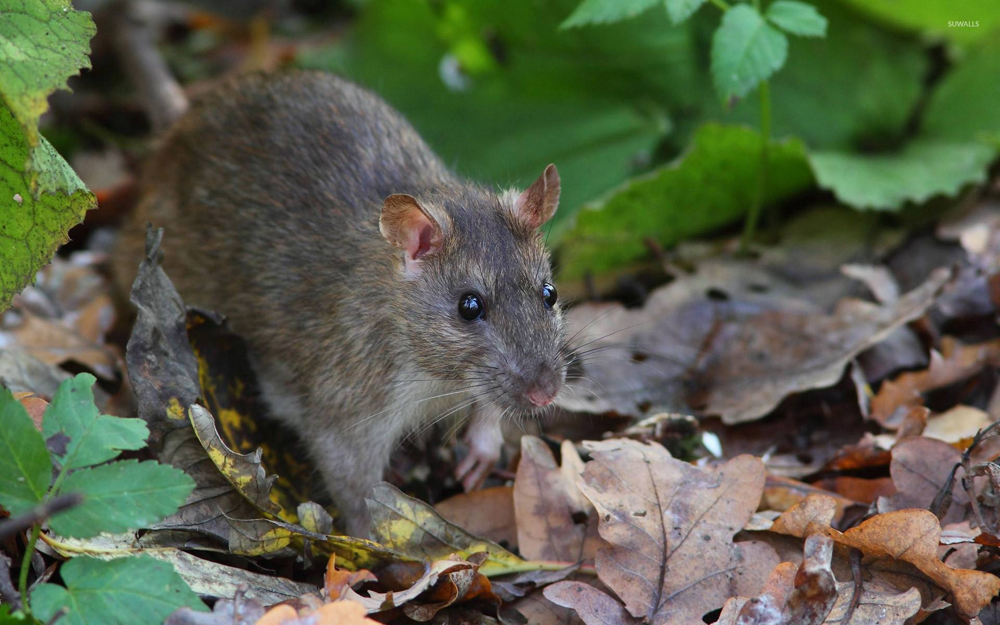
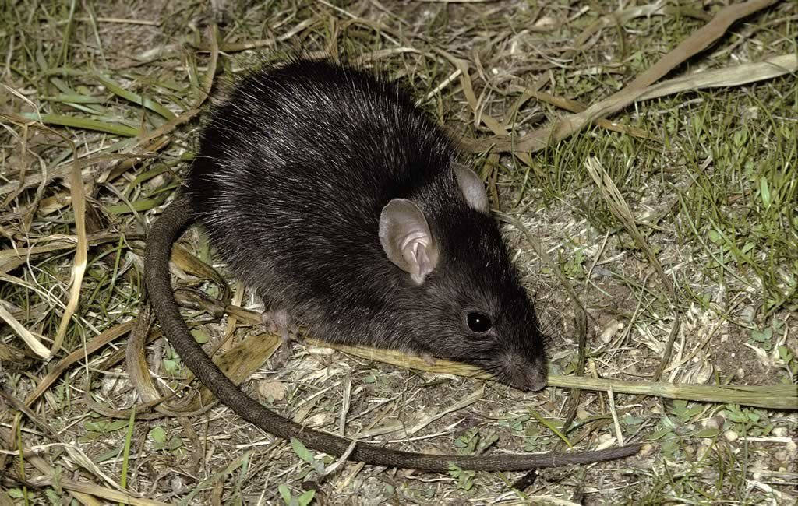

Предок декоративной крысы
Предком декоративных крыс является серая крыса (rattus norvegicus). Научное название домашних крыс (rattus norvegicus forma domestica) на русский язык переводится как «серая крыса, доместицированная форма», т.е. это пасюк (дикая крыса), прошедший процесс доместикации (одомашнивания).

А вот черная крыса (rattus rattus) к происхождению декоративных (домашних) крыс никакого отношения не имеет. Серая и черная крысы – разные виды, к тому же враждующие между собой из-за сходного ареала обитания и кормовой базы. Общего между ними только принадлежность к одному роду млекопитающих – rattus. Они не скрещиваются между собой, а при удачном спаривании самка обычно не приносит потомства или оно является нежизнеспособным, т.е. невозможно даже получение жизнеспособных гибридов. Серая/декоративная и черная крысы различаются также внешним видом. Серая крыса – довольно крупное животное с «лобастой» головой, ярко выраженными надбровными дугами и сравнительно маленькими ушами, средний вес взрослого животного колеблется в рамках от 250 до 600 грамм, хвост довольно толстый и короче тела. Чёрная крыса гораздо мельче своего «серого» собрата, вес взрослого животного от 200 до 400 грамм, уши сравнительно крупные, мордочка напоминает мышиную из-за невыраженных надбровных дуг и выпуклых глаз, хвост тонкий и длиннее тела.

Как было написано выше, декоративная крыса – это одомашненный пасюк, не просто прирученный, а именно одомашненный, т.е. прошедший процесс по изменению внешних данных, поведения, инстинктов и приспособленный к «выживанию» именно в домашних условиях. Из-за сравнительно недолгого пути в качестве животного-компаньона рука об руку с человеком крысы сохранили большинство «истинных» крысиных качеств и ушли недалеко от своего предка – дикой крысы, но некоторых механизмов выживания в дикой природе они всё же уже лишились. Сюда относятся изменение окраса, шерстного покрова и формы ушей, притупление инстинктов выживания, во многих случаях отсутствие неофобии (боязни новых ситуаций), а также практически искорененная боязнь человека. Выпущенные «на волю» декоративные, домашние крысы погибают очень быстро – от болезней, голода, хищников, отсутвия инстинктов выживания, а зачастую виной их смерти является человек, к которому они, как велит им их жизненный опыт, выходят за помощью и который их калечит и убивает как «вредителя»…